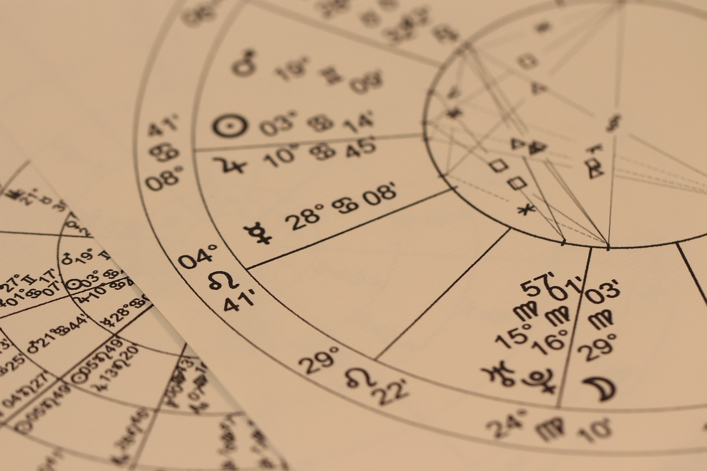

Об Астрологии
Астрология — это древняя наука, изучающая влияние небесных тел на судьбы и характеры людей. С древних времен люди искали закономерности, зависимости между астрономическими явлениями и жизнью конкретных людей. Тысячалетние наблюдения заносились в книги, анализировались и затем превращались в методы прогнозирования.
В мире существует множество астрологических школ, но самая распространенная - европейская астрологическая школа, которой придерживались еще древние греки
Астрологические Прогнозы
Астрологические прогнозы бывают разными: ежедневные, еженедельные, месячные и годовые. Самым распространенным является годовой прогноз - соляр. Он делается накануне дня рождения человека. Соляр - это возвращение Солнца в тот же знак и тот же градус, что и в момент рождения человека. Кстати, по календарю это может быть другой день (+-день-два). Соляр смотрят не по календарю, а по звездному небу.
Для прогноза на месяц используют лунар (возвращение Луны). Но так как Луна в нашем гороскопе отвечает за эмоциональную сторону и быт, то такой прогноз показывает в основном эмоциональный настрой месяца, какие-то бытовые события.
Методов прогнозирования очень много, и профессиональные астрологи обычно используют сразу несколько, чтобы составить более точный прогноз. Но для этого необходимо знать не только дату и место рождения человека, но и время, причем, чем точнее, тем лучше.
Известные Астрологи
Сейчас к астрологии принято относиться, как к развлечению. Но не серкрет, что такие известные люди, как Нострадамус, Птолемей и Вильям Лилли были астрологами. А великий Гиппократ использовал астрологию для диагностики заболеваний и выбора методов лечения. В его медицинской школе астрология была обязательным предметом. Мало того, он говорил, что врач, который не знает астрологию, не врач, а шарлатан.
